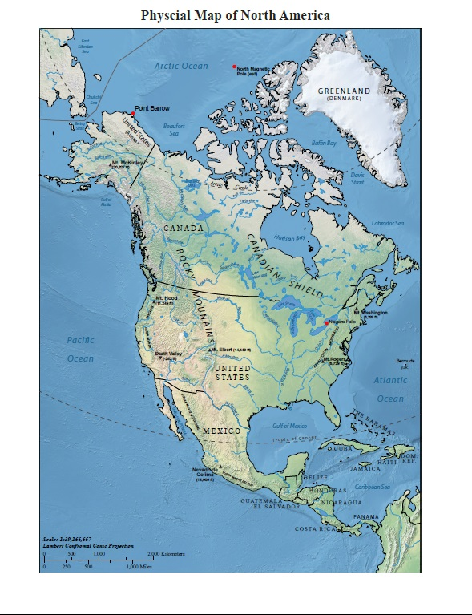
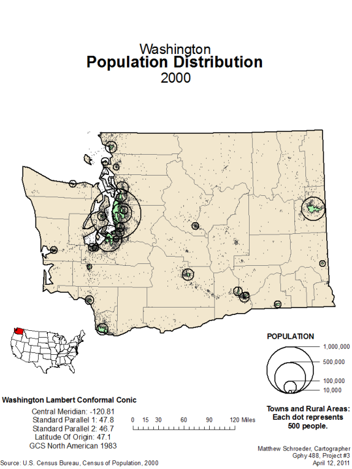

The University of Montana: BA Geography (2012)
The knowledge and application of Cartography and Geographic Information Science (CGIS) build strong skills in geo-visualization, a sound understanding of geospatial analysis, and a solid footing for geographical research or professional practice. Courses include Introduction to Cartographic and GIS, GIS Application, Raster GIS and Image Analysis, Spatial Analysis, and more
Courses taken while at Montana
- Community & Regional Analysis
- Cultural Ecology
- Digital Map Design
- Economics of Rural Areas
- Field Techniques
- Geomorphology
- Geospatial Technology in Archaeology
- Intro to Physical Geography
- Mountains & Society
- Principles of Digital Cartography
- Remote Sensing & Raster GIS
- Spatial Analysis & GIS
- Thematic Cartography & GIS
Univerity of Montana Campus:
Mapping Examples:
North America Atlas

Columbia Bike Trip
Population of Washington State

Battle of South Mountain 1862